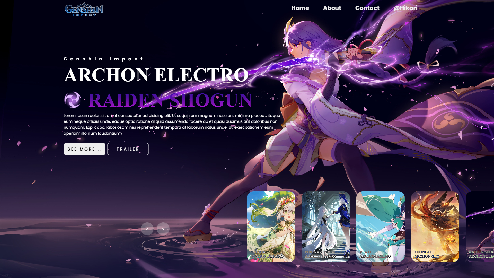

Dokumentasi singkat instalasi dan konfigurasi framework Laravel sebagai bagian dari tugas praktikum.

Praktikum ini berfokus pada persiapan lingkungan pengembangan Laravel, mulai dari instalasi Composer hingga pembuatan project baru serta konfigurasi dasar.
Latihan dimulai dengan memastikan PHP dan Composer telah
terpasang. Setelah itu, framework Laravel diinstal menggunakan Composer, dan project
baru dibuat dengan perintah
composer create-project laravel/laravel nama_project. Langkah selanjutnya
adalah melakukan konfigurasi file .env untuk menghubungkan aplikasi dengan
database.
1. Persiapan Lingkungan:
- Memastikan PHP minimal versi 8.2 dan Composer sudah aktif.
- Menyiapkan editor kode dan database lokal, seperti MySQL.
2. Instalasi Laravel:
- Menggunakan Composer untuk menginstal Laravel.
- Membuat
project baru dan melakukan proses migrasi awal.
3. Konfigurasi Dasar:
- Mengatur koneksi database pada file .env.
-
Menjalankan php artisan serve untuk melihat aplikasi berjalan di browser.
Praktikum berhasil menunjukkan alur dasar bekerja dengan framework Laravel. Dengan instalasi dan konfigurasi yang benar, aplikasi Laravel dapat berjalan dengan lancar dan siap dikembangkan lebih lanjut menjadi website dinamis.